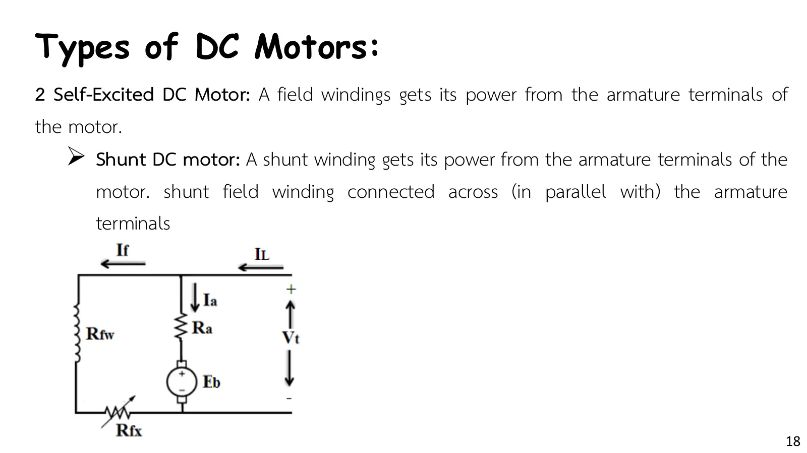
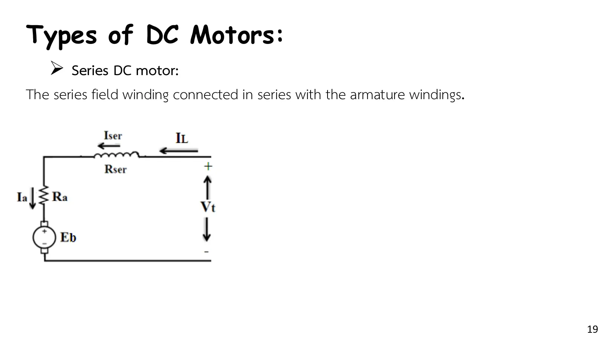
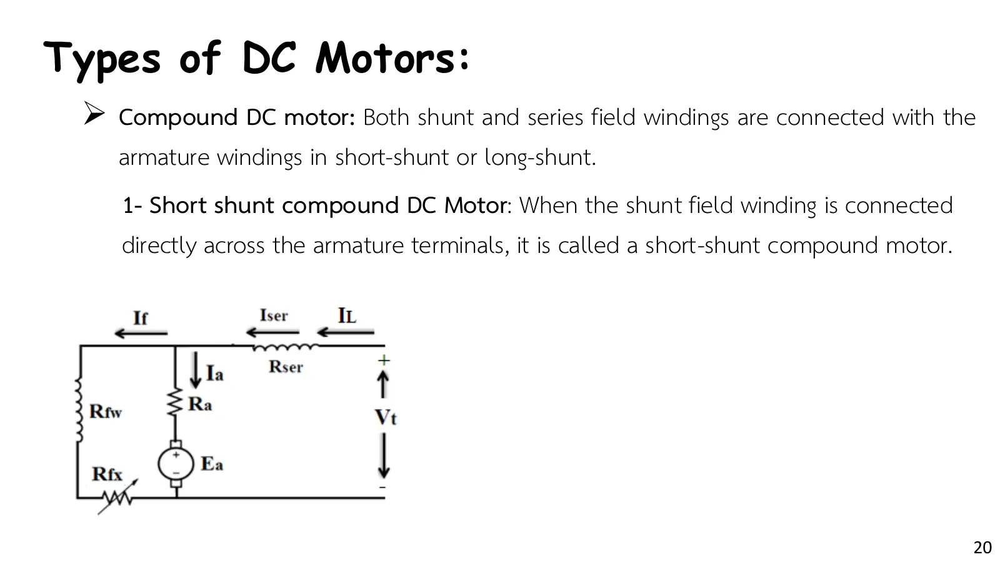
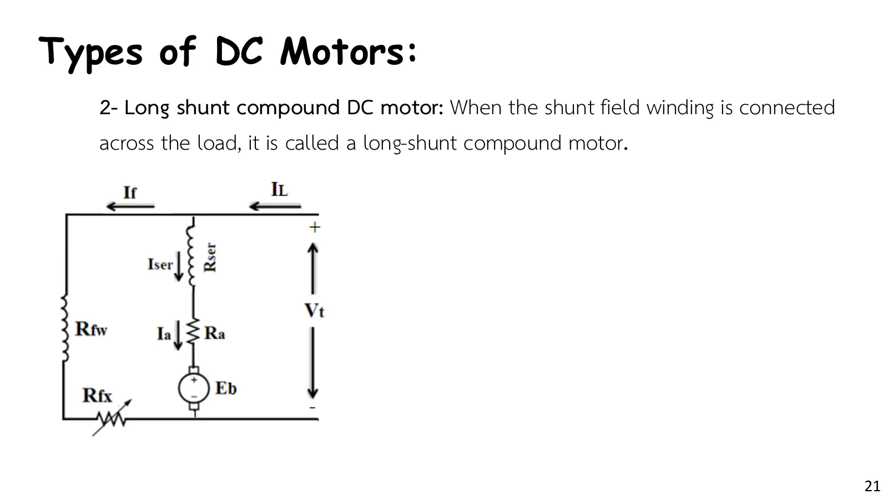

ชนิดของมอเตอร์กระแสตรง Where the field current comes from decides how the motor behaves
Types of DC motors Where the field current comes from decides how the motor behaves
มอเตอร์กระแสตรงแบ่งชนิดตามที่มาของกระแสในขดลวดสนาม (สไลด์หน้า 17–21): แบบกระตุ้นแยก (separately excited) รับไฟจากแหล่งจ่ายอีกชุดหนึ่ง แบบกระตุ้นตัวเอง (self-excited) รับไฟจากขั้วของมอเตอร์เอง ได้แก่ แบบชันต์ (ขดลวดสนามต่อขนานกับอาร์เมเจอร์) แบบอนุกรม (ขดลวดสนามต่ออนุกรมกับอาร์เมเจอร์) และแบบคอมปาวด์ (compound) ที่มีทั้งสองขดลวด ต่อได้สองแบบคือช็อตชันต์ (short shunt) และลองชันต์ (long shunt) การต่อแต่ละแบบให้ฟลักซ์ที่เปลี่ยนตามโหลดต่างกัน มอเตอร์จึงมีลักษณะแรงบิด–ความเร็วต่างกัน ภาพจำลองในส่วน A แก้วงจรของทั้งห้าแบบที่แรงบิดของโหลดที่เลือก แล้ววาดจุดทำงานบนกราฟแรงบิด–ความเร็ว โจทย์ของหน้านี้คือมอเตอร์อนุกรมขับพัดลมจาก Example 4.9 ของ P. C. Sen (ข้อ 1)
DC motors are classified by where their field current comes from (slides pp. 17–21): a separately excited motor takes it from another supply; a self-excited motor takes it from its own terminals, as a shunt motor (field in parallel with the armature), a series motor (field in series with the armature), or a compound motor with both windings, connected as a short shunt or a long shunt. Each connection makes the flux change with the load in its own way, so each type has its own torque–speed characteristic. The simulation of section A solves the circuit of all five types at the load torque you choose and plots the operating point on the torque–speed plane. The problem of this page is a series motor driving a fan, from P. C. Sen's Example 4.9 (problem 1).
ประเด็นสำคัญของหน้านี้
- ขดลวดสนามสองแบบ: ขดลวดชันต์ (ลวดเล็ก รอบมาก ความต้านทานสูง) ต่อคร่อมแรงดัน กระแสสนามจึงคงที่ ขดลวดอนุกรม (ลวดใหญ่ รอบน้อย ความต้านทานต่ำ) รับกระแสอาร์เมเจอร์ทั้งหมด ฟลักซ์จึงเพิ่มตามโหลด (สไลด์หน้า 11)
- แบบกระตุ้นแยกและแบบชันต์: ฟลักซ์คงที่ ความเร็วลดลงเพียงเล็กน้อยเมื่อโหลดเพิ่ม (มอเตอร์ความเร็วเกือบคงที่) กระแสสนามของแบบกระตุ้นแยกปรับได้อิสระจากแรงดันอาร์เมเจอร์ (สไลด์หน้า 17–18)
- แบบอนุกรม: ฟลักซ์แปรตามกระแส \(K\phi = K_{sr}I_a\) แรงบิดจึงแปรตาม \(I_a^2\) ให้แรงบิดเริ่มต้นสูงมาก แต่ความเร็วลดลงมากเมื่อโหลดเพิ่ม และพุ่งสูงอันตรายเมื่อไม่มีโหลด ห้ามเดินตัวเปล่า (สไลด์หน้า 19)
- แบบคอมปาวด์: ลักษณะอยู่ระหว่างชันต์กับอนุกรม แบบช็อตชันต์ ขดลวดชันต์คร่อมอาร์เมเจอร์โดยตรงและขดลวดอนุกรมรับกระแสสาย \(I_L\) แบบลองชันต์ ขดลวดชันต์คร่อมขั้วสายและขดลวดอนุกรมรับกระแส \(I_a\) (สไลด์หน้า 20–21)
Key points of this page
- Two kinds of field winding: the shunt winding (fine wire, many turns, high resistance) sits across a voltage, so its current is steady; the series winding (heavy wire, few turns, low resistance) carries the whole armature current, so the flux grows with the load (slide p. 11).
- Separately excited and shunt motors: constant flux, so the speed drops only a little as the load grows (nearly constant speed). A separately excited field can be set independently of the armature voltage (slides pp. 17–18).
- The series motor: the flux follows the current, \(K\phi = K_{sr}I_a\), so the torque follows \(I_a^2\). It gives a very high starting torque, but its speed falls steeply with load and races dangerously at no load: never run it unloaded (slide p. 19).
- The compound motor lies between the shunt and the series motor. In a short shunt the shunt field is directly across the armature and the series field carries the line current \(I_L\); in a long shunt the shunt field is across the line and the series field carries \(I_a\) (slides pp. 20–21).
ห้าชนิดของมอเตอร์บนกราฟแรงบิด–ความเร็วเดียวกัน
The five types on one torque–speed plane
![Slide 17, Types of DC Motors, 1 Separately Excited DC Motor: the shunt field windings are supplied from a separate constant DC power source (like a battery) for producing the magnetic flux, represented by the resistor Rf. Circuit: a battery Vf drives the field current If through the field winding Rfw and the rheostat Rfx; a separate armature circuit has the source Vt, Ra and Eb with Ia = IL. Rfw: resistance of the field winding; Rfx: resistance of the control rheostat in the field circuit; Rf = Rfw + Rfx: total field resistance; Ra: resistance of the armature circuit](slides/ch11/p17.webp)




เครื่องสมมติขนาด 220 V มี \(R_a = 0.4\ \Omega\) ขดลวดอนุกรม \(0.2\ \Omega\) และขดลวดชันต์รวม \(110\ \Omega\) (\(R_{fw} + R_{fx}\)) ตัวเลขของขดลวดสนามแต่ละแบบเลือกให้ทั้งห้าแบบหมุนที่ 1422 rpm เมื่อแรงบิดของโหลดเท่ากับ 40 N·m เลือกชนิดของมอเตอร์แล้วเลื่อนแรงบิดของโหลด: วงจรแก้ใหม่ทุกครั้งและจุดวิ่งตามกระแส กราฟข้างภาพแสดงเส้นแรงบิด–ความเร็วของทั้งห้าแบบ (แบบที่เลือกเป็นเส้นเข้ม) พร้อมจุดทำงาน สังเกตว่ามอเตอร์อนุกรมเร็วขึ้นมากเมื่อแรงบิดน้อย ส่วนเส้นของแบบกระตุ้นแยกกับแบบชันต์ทับกันพอดี เพราะกระแสสนามเท่ากัน (2 A)
A made-up 220 V machine with \(R_a = 0.4\ \Omega\), a \(0.2\ \Omega\) series field and a \(110\ \Omega\) shunt field (\(R_{fw} + R_{fx}\)); the field numbers of each type are chosen so that all five run at 1422 rpm with a 40 N·m load. Pick a type and move the load torque: the circuit is solved again each time and the dots follow the currents. The graph beside it shows the torque–speed curves of all five types (the chosen one in bold) with the operating point. Notice how fast the series motor runs at light load, while the separately excited and shunt curves lie exactly on top of each other, because their field currents are equal (2 A).
P. C. Sen Example 4.9: มอเตอร์อนุกรมขับพัดลม และการลดความเร็วด้วยความต้านทาน
P. C. Sen Example 4.9: a series motor driving a fan, slowed down by a resistance
มอเตอร์อนุกรม 220 V 7 hp ต่อทางกลกับพัดลม เมื่อต่อกับแหล่งจ่าย 220 V โดยไม่มีความต้านทานภายนอกในวงจรอาร์เมเจอร์ (\(R_{ae} = 0\)) มอเตอร์รับกระแส 25 A และหมุน 300 rpm แรงบิดที่พัดลมต้องการแปรตามกำลังสองของความเร็ว \(R_a = 0.6\ \Omega\) และ \(R_{sr} = 0.4\ \Omega\) ไม่คิดปฏิกิริยาอาร์เมเจอร์และการสูญเสียจากการหมุน
(a) จงหากำลังที่ส่งให้พัดลมและแรงบิดที่มอเตอร์พัฒนาได้ (b) ต้องการลดความเร็วเหลือ 200 rpm โดยต่อความต้านทาน \(R_{ae}\) ในวงจรอาร์เมเจอร์ จงหาค่าความต้านทานนี้และกำลังที่ส่งให้พัดลม
A 220 V, 7 hp series motor is mechanically coupled to a fan. Connected to a 220 V supply with no external resistance in the armature circuit (\(R_{ae} = 0\)), it draws 25 A and runs at 300 rpm. The torque required by the fan is proportional to the square of the speed. \(R_a = 0.6\ \Omega\) and \(R_{sr} = 0.4\ \Omega\). Neglect armature reaction and rotational loss.
(a) Find the power delivered to the fan and the torque developed by the machine. (b) The speed is to be reduced to 200 rpm by inserting a resistance \(R_{ae}\) in the armature circuit. Find this resistance and the power delivered to the fan.
วงจรวาดตามสไลด์หน้า 19: ขดลวดสนามอนุกรม \(R_{sr}\) อยู่บนสายด้านบน และมีที่สำหรับ \(R_{ae}\) (ตอนแรก 0 Ω) แผงข้างภาพคือกราฟแรงบิด–ความเร็วของมอเตอร์ (สีฟ้า) กับเส้นโค้งของพัดลม \(T \propto n^2\) (เส้นประ) จุดทำงานคือจุดที่สองเส้นตัดกัน ขั้นที่ 3 วาดเส้นของมอเตอร์เมื่อมี \(R_{ae}\) ซึ่งเลื่อนลงมาตัดเส้นพัดลมที่ 200 rpm ลองตอบก่อน
The circuit follows slide p. 19: the series field \(R_{sr}\) on the top wire, with a place for \(R_{ae}\) (0 Ω at first). The side panel is the motor's torque–speed curve (cyan) with the fan's curve \(T \propto n^2\) (dashed); the operating point is where they cross. Step 3 adds the motor's curve with \(R_{ae}\), which drops down to meet the fan at 200 rpm. Try it first.
ฝึกเพิ่ม
More practice
ลองทำดู 1 — ห้าชนิด
- ส่วน A ตั้งแรงบิด 40 N·m: ทั้งห้าแบบหมุนที่ 1422 rpm แล้วลดแรงบิดเหลือ 5 N·m: มอเตอร์ชันต์เร็วขึ้นเพียงราว 5 % แต่มอเตอร์อนุกรมพุ่งเกิน 4000 rpm (หลุดกราฟ)
- เพิ่มแรงบิดเป็น 80 N·m: มอเตอร์อนุกรมใช้กระแสอาร์เมเจอร์น้อยที่สุด (ราว 42 A) เพราะฟลักซ์เพิ่มตามกระแส ส่วนมอเตอร์ชันต์ต้องใช้ 57 A แรงบิดสตาร์ตที่สูงจึงเป็นจุดเด่นของมอเตอร์อนุกรม (รถไฟฟ้า ปั้นจั่น)
- เทียบช็อตชันต์กับลองชันต์: เส้นเกือบทับกัน ต่างกันเพียงว่าขดลวดอนุกรมรับ \(I_L\) หรือ \(I_a\) ซึ่งต่างกันเพียงกระแสสนามราว 2 A
ลองทำดู 2 — พัดลม
- ข้อ 1 ขั้นที่ 2: จุดทำงานคือจุดตัดของเส้นมอเตอร์กับเส้นพัดลมที่ 300 rpm และ 155.2 N·m
- ขั้นที่ 5: \(R_{ae} = 7\ \Omega\) กำลังจากสายลดจาก 5500 W เหลือ 3667 W แต่พัดลมได้เพียง 1444 W อีก 2222 W กลายเป็นความร้อนใน \(R_{ae}\) และขดลวด
- คำถาม: ถ้าลดความเร็วโดยลดแรงดันที่จ่ายแทน (กระแสยังเป็น 16.67 A เท่าเดิม) จะต้องใช้แรงดันเท่าใด และเสียกำลังเป็นความร้อนเท่าใด
Try this 1 — the five types
- In section A set the torque to 40 N·m: all five run at 1422 rpm. Lower it to 5 N·m: the shunt motor speeds up by only about 5 %, but the series motor shoots past 4000 rpm (off the graph).
- Raise the torque to 80 N·m: the series motor needs the least armature current (about 42 A), because its flux grows with the current, while the shunt motor needs 57 A. A high starting torque is what series motors are known for (traction, cranes).
- Compare the short and the long shunt: the curves almost coincide, since the only difference is whether the series field carries \(I_L\) or \(I_a\), about 2 A of field current apart.
Try this 2 — the fan
- Problem 1, step 2: the operating point is where the motor curve meets the fan curve, at 300 rpm and 155.2 N·m.
- Step 5: with \(R_{ae} = 7\ \Omega\) the line power drops from 5500 W to 3667 W, but the fan gets only 1444 W; the other 2222 W becomes heat in \(R_{ae}\) and the windings.
- Question: if the speed were reduced by lowering the supply voltage instead (the current is still 16.67 A), what voltage would be needed, and how much power would be lost as heat?